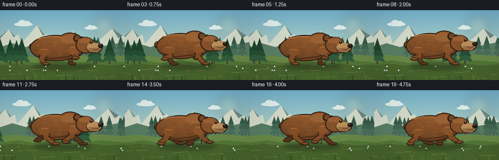
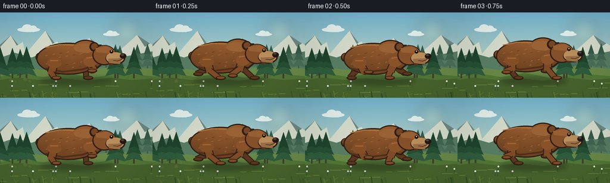

CODING AGENTS AS PIXEL WORLD MODELS
traex/GPT-5.6-Sol · instance_preservation_0012
点击播放 · 原生 RGB 像素
逐轮保存的候选
回放视频、检查图与代码变化。
每份候选均可单独播放。实际图片检查记录在下方工具轨迹中。
候选 01播放与检查图
点击播放 · 原生 RGB 像素


展开代码变化
--- 上一保存版本
+++ 本次保存版本
@@ -0,0 +1,236 @@
+from pathlib import Path
+import math
+import numpy as np
+from PIL import Image, ImageDraw, ImageFilter
+import artifact_io
+
+# A hand-rendered, antialiased animated nature vignette.
+W, H, N = 256, 144, 20
+S = 4
+WS, HS = W*S, H*S
+TAU = math.pi * 2
+rng = np.random.default_rng(8127)
+
+# Stable world objects make the camera move feel coherent.
+far_trees = [(float(rng.uniform(-80, 620)), float(rng.uniform(0.65, 1.05)), int(rng.integers(0,3))) for _ in range(30)]
+near_trees = [(float(rng.uniform(-100, 700)), float(rng.uniform(.75, 1.25)), int(rng.integers(0,4))) for _ in range(22)]
+grasses = [(float(rng.uniform(-80, 760)), float(rng.uniform(2, 13)), int(rng.integers(0,4))) for _ in range(105)]
+flowers = [(float(rng.uniform(-80, 760)), int(rng.choice([116,120,124])), tuple(rng.choice([210,225,240],3))) for _ in range(22)]
+
+
+def sc(v):
+ return int(round(v*S))
+
+def box(b):
+ return tuple(sc(v) for v in b)
+
+def pts(p):
+ return [(sc(x),sc(y)) for x,y in p]
+
+def ellipse(d, b, fill, outline=None, width=1):
+ d.ellipse(box(b), fill=fill, outline=outline, width=sc(width) if outline else 1)
+
+def polygon(d, p, fill, outline=None, width=1):
+ d.polygon(pts(p), fill=fill)
+ if outline:
+ d.line(pts(p+[p[0]]), fill=outline, width=sc(width), joint='curve')
+
+def line(d, p, fill, width=1, joint='curve'):
+ d.line(pts(p), fill=fill, width=sc(width), joint=joint)
+
+def rounded_rect(d,b,r,fill):
+ d.rounded_rectangle(box(b),radius=sc(r),fill=fill)
+
+def gradient_background():
+ arr=np.zeros((HS,WS,3),dtype=np.uint8)
+ top=np.array([115,178,205.]); bot=np.array([226,226,183.])
+ for y in range(HS):
+ t=y/(HS-1)
+ col=top*(1-t)+bot*t
+ arr[y,:,]=col.astype(np.uint8)
+ return Image.fromarray(arr,'RGB')
+
+
+def draw_pine(d,x,base,scale,far=False,alpha_col=None):
+ if far:
+ trunk=(75,91,77); cols=[(75,111,91),(65,101,82),(55,91,73)]
+ else:
+ trunk=(63,66,49); cols=[(48,92,61),(37,79,51),(30,67,44)]
+ line(d,[(x,base),(x,base-37*scale)],trunk,max(1,3*scale))
+ for k,(yy,ww) in enumerate([(base-12,16),(base-23,13),(base-33,9)]):
+ polygon(d,[(x,yy-20*scale),(x-ww*scale,yy+8*scale),(x,yy+4*scale),(x+ww*scale,yy+8*scale)],cols[k],None)
+
+
+def draw_limb(d, anchor, phase, color, outline, far=False):
+ ax, ay = anchor
+ # Paw follows a long planted stride, then folds upward during recovery.
+ sx = math.sin(phase)
+ cy = math.cos(phase)
+ footx = ax + 21*sx
+ lift = max(0.0, -cy) * 12
+ footy = 112 - lift
+ knee_x = ax + 7*sx - 5*cy
+ knee_y = ay + 15 + 3*max(0, cy)
+ # Stout, softly jointed bear legs.
+ line(d, [(ax,ay),(knee_x,knee_y)], outline, 15 if not far else 13)
+ line(d, [(ax,ay),(knee_x,knee_y)], color, 12 if not far else 10)
+ ellipse(d,(knee_x-6,knee_y-6,knee_x+6,knee_y+6),color)
+ line(d, [(knee_x,knee_y),(footx,footy-2)], outline, 11 if not far else 10)
+ line(d, [(knee_x,knee_y),(footx,footy-2)], color, 8 if not far else 7)
+ # broad dark paw, pointed in travel direction
+ ellipse(d,(footx-5,footy-5,footx+12,footy+2),outline)
+ ellipse(d,(footx-3,footy-4,footx+10,footy),color)
+
+
+def make_frame(i):
+ im=gradient_background()
+ d=ImageDraw.Draw(im)
+ # Sunlit haze and slow clouds.
+ haze=Image.new('RGBA',(WS,HS),(0,0,0,0)); hd=ImageDraw.Draw(haze)
+ hd.ellipse(box((190,10,236,56)),fill=(255,239,168,35))
+ hd.ellipse(box((199,19,227,47)),fill=(255,247,190,45))
+ haze=haze.filter(ImageFilter.GaussianBlur(sc(10)))
+ im=Image.alpha_composite(im.convert('RGBA'),haze).convert('RGB'); d=ImageDraw.Draw(im)
+ cloud_shift=-i*0.35
+ for cx,cy,sz in [(29+cloud_shift,25,1),(173+cloud_shift*.6,34,.72)]:
+ col=(225,238,234)
+ ellipse(d,(cx,cy,cx+38*sz,cy+8*sz),col)
+ ellipse(d,(cx+8*sz,cy-5*sz,cx+25*sz,cy+8*sz),col)
+ ellipse(d,(cx+20*sz,cy-3*sz,cx+33*sz,cy+8*sz),col)
+ # Distant layered mountains, moving only slightly with the tracking camera.
+ shift=i*0.7
+ polygon(d,[(-30-shift,80),(18-shift,39),(43-shift,70),(76-shift,31),(110-shift,76),(150-shift,43),(191-shift,73),(230-shift,38),(290-shift,78)],(109,137,132))
+ polygon(d,[(-20-shift,80),(18-shift,39),(28-shift,56),(38-shift,50),(43-shift,70),(76-shift,31),(88-shift,53),(96-shift,49),(110-shift,76),(150-shift,43),(162-shift,60),(170-shift,56),(191-shift,73),(230-shift,38),(243-shift,58),(252-shift,52),(290-shift,78)],(212,218,201))
+ polygon(d,[(-20,83),(25,68),(53,76),(89,62),(122,78),(164,66),(211,74),(280,61),(280,103),(-20,103)],(88,126,100))
+ # Far forest parallax.
+ for wx,sz,kind in far_trees:
+ x=((wx-i*2.1+80)%700)-80
+ if -25<x<281: draw_pine(d,x,99,sz*.72,True)
+ # Meadow bands.
+ polygon(d,[(-5,94),(30,92),(72,97),(112,93),(151,96),(196,91),(261,95),(261,145),(-5,145)],(105,137,71))
+ polygon(d,[(-5,109),(37,103),(73,109),(113,102),(154,110),(207,103),(261,108),(261,145),(-5,145)],(83,119,55))
+ # Mid-ground conifers.
+ for wx,sz,kind in near_trees:
+ x=((wx-i*4.8+100)%800)-100
+ if -30<x<286: draw_pine(d,x,111,sz,False)
+ # Ground, horizontal speed streaks, stones.
+ polygon(d,[(-4,114),(30,110),(67,114),(103,111),(144,115),(186,110),(222,114),(262,111),(262,145),(-4,145)],(72,100,45))
+ for k in range(14):
+ y=119+(k*13)%23
+ x=((k*47-i*11)%310)-30
+ line(d,[(x,y),(x+10+(k%4)*4,y)],(110,133,60),1)
+ for wx,yy,col in flowers:
+ x=((wx-i*8.5+80)%820)-80
+ if 0<x<W:
+ line(d,[(x,yy),(x-1,yy+8)],(42,82,38),1)
+ ellipse(d,(x-1.4,yy-1.4,x+1.4,yy+1.4),col)
+ # Running shadow changes with airborne phase.
+ phase=TAU*i/5.0
+ airborne=(1-math.cos(phase))/2
+ sh=Image.new('RGBA',(WS,HS),(0,0,0,0)); sd=ImageDraw.Draw(sh)
+ sd.ellipse(box((65+airborne*7,108,190-airborne*7,123)),fill=(24,30,20,90))
+ sh=sh.filter(ImageFilter.GaussianBlur(sc(4)))
+ im=Image.alpha_composite(im.convert('RGBA'),sh).convert('RGB'); d=ImageDraw.Draw(im)
+
+ bob=-2.2*math.sin(phase*2)-2.0*airborne
+ stretch=2.0*math.cos(phase)
+ # Dust kicked backward, translucent and motion-coherent.
+ dust=Image.new('RGBA',(WS,HS),(0,0,0,0)); dd=ImageDraw.Draw(dust)
+ if math.cos(phase)>-.2:
+ for q in range(7):
+ dx=58-q*8-(i%3)*2; dy=109+((q*7+i*3)%10)
+ r=2+(q%3)
+ dd.ellipse(box((dx-r,dy-r,dx+r,dy+r)),fill=(187,164,105,max(14,48-q*5)))
+ dust=dust.filter(ImageFilter.GaussianBlur(sc(1.2)))
+ im=Image.alpha_composite(im.convert('RGBA'),dust).convert('RGB'); d=ImageDraw.Draw(im)
+
+ outline=(49,31,20)
+ farcol=(91,55,30)
+ nearcol=(126,76,38)
+ # Far legs, offset phase, behind the torso.
+ draw_limb(d,(91,84+bob),phase+math.pi*.92,farcol,outline,True)
+ draw_limb(d,(151,82+bob),phase+math.pi*1.9,farcol,outline,True)
+ # Tiny round tail rim-lit at the rear.
+ ellipse(d,(60-stretch*.2,68+bob,74-stretch*.2,83+bob),outline)
+ ellipse(d,(62-stretch*.2,69+bob,72-stretch*.2,80+bob),(121,76,40))
+
+ # Torso mask gets a rich directional gradient instead of a flat fill.
+ mask=Image.new('L',(WS,HS),0); md=ImageDraw.Draw(mask)
+ md.ellipse(box((65-stretch,53+bob,164+stretch,103+bob)),fill=255)
+ md.ellipse(box((118,48+bob,169,91+bob)),fill=255)
+ md.polygon(pts([(143,57+bob),(169,56+bob),(183,76+bob),(160,94+bob),(142,89+bob)]),fill=255)
+ # outline silhouette slightly larger underneath
+ ellipse(d,(63-stretch,51+bob,166+stretch,105+bob),outline)
+ ellipse(d,(116,46+bob,171,94+bob),outline)
+ polygon(d,[(141,55+bob),(170,54+bob),(186,76+bob),(161,97+bob),(139,91+bob)],outline)
+ yy=np.arange(HS)[:,None]/S
+ xx=np.arange(WS)[None,:]/S
+ light=np.clip(1.12 - .0058*(yy-(50+bob)) - .0016*np.abs(xx-121),.70,1.14)
+ base=np.zeros((HS,WS,4),dtype=np.uint8)
+ for c,val in enumerate([137,84,43]): base[:,:,c]=np.clip(val*light,0,255).astype(np.uint8)
+ base[:,:,3]=np.array(mask)
+ im=Image.alpha_composite(im.convert('RGBA'),Image.fromarray(base,'RGBA')).convert('RGB'); d=ImageDraw.Draw(im)
+ # Shoulder mantle and underside shading define the same individual.
+ ellipse(d,(124,52+bob,161,68+bob),(154,99,54))
+ line(d,[(76,94+bob),(105,100+bob),(138,96+bob),(159,89+bob)],(81,47,27),3)
+ line(d,[(76,59+bob),(100,54+bob),(124,55+bob)],(176,116,64),2)
+ # Sparse coherent fur marks.
+ for k in range(21):
+ fx=75+(k*23%80); fy=59+((k*17)%35)+bob
+ # Only marks safely within central body.
+ if ((fx-114)/49)**2+((fy-bob-78)/26)**2<.78:
+ col=(173,108,57) if k%3 else (96,56,31)
+ line(d,[(fx,fy),(fx+3+(k%2),fy-1)],col,1)
+
+ # Near legs in front; fore/hind alternation communicates the gallop.
+ draw_limb(d,(91,84+bob),phase,nearcol,outline,False)
+ draw_limb(d,(151,82+bob),phase+math.pi,nearcol,outline,False)
+ # Blend upper legs naturally into coat.
+ ellipse(d,(79,76+bob,103,94+bob),(132,79,39))
+ ellipse(d,(140,73+bob,163,92+bob),(138,83,42))
+ line(d,[(84,81+bob),(98,81+bob)],(163,101,54),2)
+ line(d,[(145,77+bob),(158,75+bob)],(168,105,57),2)
+
+ # Head, cheek, stable ear and pale muzzle (strong identity anchors).
+ ellipse(d,(150,50+bob,166,66+bob),outline)
+ ellipse(d,(153,52+bob,164,63+bob),(117,70,38))
+ ellipse(d,(155,55+bob,195,89+bob),outline)
+ ellipse(d,(157,56+bob,193,87+bob),(133,81,42))
+ # brow ridge/highlight
+ polygon(d,[(160,60+bob),(180,57+bob),(193,65+bob),(184,69+bob),(162,67+bob)],(153,96,52))
+ ellipse(d,(177,67+bob,210,88+bob),outline)
+ ellipse(d,(178,67+bob,208,86+bob),(186,143,91))
+ # muzzle lower shade and nose
+ polygon(d,[(181,78+bob),(205,77+bob),(201,87+bob),(183,86+bob)],(155,111,70))
+ ellipse(d,(201,69+bob,212,78+bob),(35,25,20))
+ ellipse(d,(203,70+bob,208,73+bob),(82,69,56))
+ # eye and glint
+ ellipse(d,(184,63+bob,190,69+bob),(29,20,15))
+ ellipse(d,(186,64+bob,188,66+bob),(246,211,126))
+ # mouth line, always same calm determined expression.
+ line(d,[(205,79+bob),(197,82+bob),(190,81+bob)],(54,31,23),1)
+ # chin tuft
+ polygon(d,[(182,85+bob),(186,91+bob),(190,86+bob)],(87,50,29))
+
+ # Fast foreground blades add depth and obvious rightward locomotion.
+ for wx,hh,kind in grasses:
+ x=((wx-i*11.5+70)%850)-70
+ if -5<x<W+5:
+ y=145
+ col=[(47,78,34),(61,91,39),(77,105,42),(94,119,50)][kind]
+ line(d,[(x,y),(x-2-kind*.5,y-hh)],col,1 if hh<8 else 2)
+ if kind==3:
+ line(d,[(x-1,y-hh*.55),(x+4,y-hh*.8)],col,1)
+
+ # mild cinematic vignette applied at high resolution
+ arr=np.asarray(im).astype(np.float32)
+ Y,X=np.mgrid[0:HS,0:WS]
+ rad=((X-WS/2)/(WS*.72))**2+((Y-HS/2)/(HS*.85))**2
+ vig=np.clip(1-.12*rad, .84,1)[...,None]
+ arr=np.clip(arr*vig,0,255).astype(np.uint8)
+ im=Image.fromarray(arr,'RGB').resize((W,H),Image.Resampling.LANCZOS)
+ return np.asarray(im,dtype=np.uint8)
+
+frames=np.stack([make_frame(i) for i in range(N)])
+assert frames.shape==(20,144,256,3) and frames.dtype==np.uint8
+artifact_io.save(frames,Path(__file__).resolve().parent)
可观测工具轨迹
实际执行的命令与返回图片。
命令 1exit 0
/bin/bash -lc "ls -la && printf '\\n--- prompt.txt ---\\n' && cat prompt.txt && printf '\\n--- GENERATION_RULES.md ---\\n' && cat GENERATION_RULES.md && printf '\\n--- task_spec.json ---\\n' && cat task_spec.json"
命令 2exit 0
/bin/bash -lc "find . -maxdepth 2 -type f -printf '%p\\n' | sort"
命令 3exit 0
/bin/bash -lc "sed -n '1,260p' artifact_io.py"
命令 4exit 0
/bin/bash -lc "cat > generate.py <<'PY'
from pathlib import Path
import math
import numpy as np
from PIL import Image, ImageDraw, ImageFilter
import artifact_io
# A hand-rendered, antialiased animated nature vignette.
W, H, N = 256, 144, 20
S = 4
WS, HS = W*S, H*S
TAU = math.pi * 2
rng = np.random.default_rng(8127)
# Stable world objects make the camera move feel coherent.
far_trees = [(float(rng.uniform(-80, 620)), float(rng.uniform(0.65, 1.05)), int(rng.integers(0,3))) for _ in range(30)]
near_trees = [(float(rng.uniform(-100, 700)), float(rng.uniform(.75, 1.25)), int(rng.integers(0,4))) for _ in range(22)]
grasses = [(float(rng.uniform(-80, 760)), float(rng.uniform(2, 13)), int(rng.integers(0,4))) for _ in range(105)]
flowers = [(float(rng.uniform(-80, 760)), int(rng.choice([116,120,124])), tuple(rng.choice([210,225,240],3))) for _ in range(22)]
def sc(v):
return int(round(v*S))
def box(b):
return tuple(sc(v) for v in b)
def pts(p):
return [(sc(x),sc(y)) for x,y in p]
def ellipse(d, b, fill, outline=None, width=1):
d.ellipse(box(b), fill=fill, outline=outline, width=sc(width) if outline else 1)
def polygon(d, p, fill, outline=None, width=1):
d.polygon(pts(p), fill=fill)
if outline:
d.line(pts(p+[p[0]]), fill=outline, width=sc(width), joint='curve')
def line(d, p, fill, width=1, joint='curve'):
d.line(pts(p), fill=fill, width=sc(width), joint=joint)
def rounded_rect(d,b,r,fill):
d.rounded_rectangle(box(b),radius=sc(r),fill=fill)
def gradient_background():
arr=np.zeros((HS,WS,3),dtype=np.uint8)
top=np.array([115,178,205.]); bot=np.array([226,226,183.])
for y in range(HS):
t=y/(HS-1)
col=top*(1-t)+bot*t
arr[y,:,]=col.astype(np.uint8)
return Image.fromarray(arr,'RGB')
def draw_pine(d,x,base,scale,far=False,alpha_col=None):
if far:
trunk=(75,91,77); cols=[(75,111,91),(65,101,82),(55,91,73)]
else:
trunk=(63,66,49); cols=[(48,92,61),(37,79,51),(30,67,44)]
line(d,[(x,base),(x,base-37*scale)],trunk,max(1,3*scale))
for k,(yy,ww) in enumerate([(base-12,16),(base-23,13),(base-33,9)]):
polygon(d,[(x,yy-20*scale),(x-ww*scale,yy+8*scale),(x,yy+4*scale),(x+ww*scale,yy+8*scale)],cols[k],None)
def draw_limb(d, anchor, phase, color, outline, far=False):
ax, ay = anchor
# Paw follows a long planted stride, then folds upward during recovery.
sx = math.sin(phase)
cy = math.cos(phase)
footx = ax + 21*sx
lift = max(0.0, -cy) * 12
footy = 112 - lift
knee_x = ax + 7*sx - 5*cy
knee_y = ay + 15 + 3*max(0, cy)
# Stout, softly jointed bear legs.
line(d, [(ax,ay),(knee_x,knee_y)], outline, 15 if not far else 13)
line(d, [(ax,ay),(knee_x,knee_y)], color, 12 if not far else 10)
ellipse(d,(knee_x-6,knee_y-6,knee_x+6,knee_y+6),color)
line(d, [(knee_x,knee_y),(footx,footy-2)], outline, 11 if not far else 10)
line(d, [(knee_x,knee_y),(footx,footy-2)], color, 8 if not far else 7)
# broad dark paw, pointed in travel direction
ellipse(d,(footx-5,footy-5,footx+12,footy+2),outline)
ellipse(d,(footx-3,footy-4,footx+10,footy),color)
def make_frame(i):
im=gradient_background()
d=ImageDraw.Draw(im)
# Sunlit haze and slow clouds.
haze=Image.new('RGBA',(WS,HS),(0,0,0,0)); hd=ImageDraw.Draw(haze)
hd.ellipse(box((190,10,236,56)),fill=(255,239,168,35))
hd.ellipse(box((199,19,227,47)),fill=(255,247,190,45))
haze=haze.filter(ImageFilter.GaussianBlur(sc(10)))
im=Image.alpha_composite(im.convert('RGBA'),haze).convert('RGB'); d=ImageDraw.Draw(im)
cloud_shift=-i*0.35
for cx,cy,sz in [(29+cloud_shift,25,1),(173+cloud_shift*.6,34,.72)]:
col=(225,238,234)
ellipse(d,(cx,cy,cx+38*sz,cy+8*sz),col)
ellipse(d,(cx+8*sz,cy-5*sz,cx+25*sz,cy+8*sz),col)
ellipse(d,(cx+20*sz,cy-3*sz,cx+33*sz,cy+8*sz),col)
# Distant layered mountains, moving only slightly with the tracking camera.
shift=i*0.7
polygon(d,[(-30-shift,80),(18-shift,39),(43-shift,70),(76-shift,31),(110-shift,76),(150-shift,43),(191-shift,73),(230-shift,38),(290-shift,78)],(109,137,132))
polygon(d,[(-20-shift,80),(18-shift,39),(28-shift,56),(38-shift,50),(43-shift,70),(76-shift,31),(88-shift,53),(96-shift,49),(110-shift,76),(150-shift,43),(162-shift,60),(170-shift,56),(191-shift,73),(230-shift,38),(243-shift,58),(252-shift,52),(290-shift,78)],(212,218,201))
polygon(d,[(-20,83),(25,68),(53,76),(89,62),(122,78),(164,66),(211,74),(280,61),(280,103),(-20,103)],(88,126,100))
# Far forest parallax.
for wx,sz,kind in far_trees:
x=((wx-i*2.1+80)%700)-80
if -25<x<281: draw_pine(d,x,99,sz*.72,True)
# Meadow bands.
polygon(d,[(-5,94),(30,92),(72,97),(112,93),(151,96),(196,91),(261,95),(261,145),(-5,145)],(105,137,71))
polygon(d,[(-5,109),(37,103),(73,109),(113,102),(154,110),(207,103),(261,108),(261,145),(-5,145)],(83,119,55))
# Mid-ground conifers.
for wx,sz,kind in near_trees:
x=((wx-i*4.8+100)%800)-100
if -30<x<286: draw_pine(d,x,111,sz,False)
# Ground, horizontal speed streaks, stones.
polygon(d,[(-4,114),(30,110),(67,114),(103,111),(144,115),(186,110),(222,114),(262,111),(262,145),(-4,145)],(72,100,45))
for k in range(14):
y=119+(k*13)%23
x=((k*47-i*11)%310)-30
line(d,[(x,y),(x+10+(k%4)*4,y)],(110,133,60),1)
for wx,yy,col in flowers:
x=((wx-i*8.5+80)%820)-80
if 0<x<W:
line(d,[(x,yy),(x-1,yy+8)],(42,82,38),1)
ellipse(d,(x-1.4,yy-1.4,x+1.4,yy+1.4),col)
# Running shadow changes with airborne phase.
phase=TAU*i/5.0
airborne=(1-math.cos(phase))/2
sh=Image.new('RGBA',(WS,HS),(0,0,0,0)); sd=ImageDraw.Draw(sh)
sd.ellipse(box((65+airborne*7,108,190-airborne*7,123)),fill=(24,30,20,90))
sh=sh.filter(ImageFilter.GaussianBlur(sc(4)))
im=Image.alpha_composite(im.convert('RGBA'),sh).convert('RGB'); d=ImageDraw.Draw(im)
bob=-2.2*math.sin(phase*2)-2.0*airborne
stretch=2.0*math.cos(phase)
# Dust kicked backward, translucent and motion-coherent.
dust=Image.new('RGBA',(WS,HS),(0,0,0,0)); dd=ImageDraw.Draw(dust)
if math.cos(phase)>-.2:
for q in range(7):
dx=58-q*8-(i%3)*2; dy=109+((q*7+i*3)%10)
r=2+(q%3)
dd.ellipse(box((dx-r,dy-r,dx+r,dy+r)),fill=(187,164,105,max(14,48-q*5)))
dust=dust.filter(ImageFilter.GaussianBlur(sc(1.2)))
im=Image.alpha_composite(im.convert('RGBA'),dust).convert('RGB'); d=ImageDraw.Draw(im)
outline=(49,31,20)
farcol=(91,55,30)
nearcol=(126,76,38)
# Far legs, offset phase, behind the torso.
draw_limb(d,(91,84+bob),phase+math.pi*.92,farcol,outline,True)
draw_limb(d,(151,82+bob),phase+math.pi*1.9,farcol,outline,True)
# Tiny round tail rim-lit at the rear.
ellipse(d,(60-stretch*.2,68+bob,74-stretch*.2,83+bob),outline)
ellipse(d,(62-stretch*.2,69+bob,72-stretch*.2,80+bob),(121,76,40))
# Torso mask gets a rich directional gradient instead of a flat fill.
mask=Image.new('L',(WS,HS),0); md=ImageDraw.Draw(mask)
md.ellipse(box((65-stretch,53+bob,164+stretch,103+bob)),fill=255)
md.ellipse(box((118,48+bob,169,91+bob)),fill=255)
md.polygon(pts([(143,57+bob),(169,56+bob),(183,76+bob),(160,94+bob),(142,89+bob)]),fill=255)
# outline silhouette slightly larger underneath
ellipse(d,(63-stretch,51+bob,166+stretch,105+bob),outline)
ellipse(d,(116,46+bob,171,94+bob),outline)
polygon(d,[(141,55+bob),(170,54+bob),(186,76+bob),(161,97+bob),(139,91+bob)],outline)
yy=np.arange(HS)[:,None]/S
xx=np.arange(WS)[None,:]/S
light=np.clip(1.12 - .0058*(yy-(50+bob)) - .0016*np.abs(xx-121),.70,1.14)
base=np.zeros((HS,WS,4),dtype=np.uint8)
for c,val in enumerate([137,84,43]): base[:,:,c]=np.clip(val*light,0,255).astype(np.uint8)
base[:,:,3]=np.array(mask)
im=Image.alpha_composite(im.convert('RGBA'),Image.fromarray(base,'RGBA')).convert('RGB'); d=ImageDraw.Draw(im)
# Shoulder mantle and underside shading define the same individual.
ellipse(d,(124,52+bob,161,68+bob),(154,99,54))
line(d,[(76,94+bob),(105,100+bob),(138,96+bob),(159,89+bob)],(81,47,27),3)
line(d,[(76,59+bob),(100,54+bob),(124,55+bob)],(176,116,64),2)
# Sparse coherent fur marks.
for k in range(21):
fx=75+(k*23%80); fy=59+((k*17)%35)+bob
# Only marks safely within central body.
if ((fx-114)/49)**2+((fy-bob-78)/26)**2<.78:
col=(173,108,57) if k%3 else (96,56,31)
line(d,[(fx,fy),(fx+3+(k%2),fy-1)],col,1)
# Near legs in front; fore/hind alternation communicates the gallop.
draw_limb(d,(91,84+bob),phase,nearcol,outline,False)
draw_limb(d,(151,82+bob),phase+math.pi,nearcol,outline,False)
# Blend upper legs naturally into coat.
ellipse(d,(79,76+bob,103,94+bob),(132,79,39))
ellipse(d,(140,73+bob,163,92+bob),(138,83,42))
line(d,[(84,81+bob),(98,81+bob)],(163,101,54),2)
line(d,[(145,77+bob),(158,75+bob)],(168,105,57),2)
# Head, cheek, stable ear and pale muzzle (strong identity anchors).
ellipse(d,(150,50+bob,166,66+bob),outline)
ellipse(d,(153,52+bob,164,63+bob),(117,70,38))
ellipse(d,(155,55+bob,195,89+bob),outline)
ellipse(d,(157,56+bob,193,87+bob),(133,81,42))
# brow ridge/highlight
polygon(d,[(160,60+bob),(180,57+bob),(193,65+bob),(184,69+bob),(162,67+bob)],(153,96,52))
ellipse(d,(177,67+bob,210,88+bob),outline)
ellipse(d,(178,67+bob,208,86+bob),(186,143,91))
# muzzle lower shade and nose
polygon(d,[(181,78+bob),(205,77+bob),(201,87+bob),(183,86+bob)],(155,111,70))
ellipse(d,(201,69+bob,212,78+bob),(35,25,20))
ellipse(d,(203,70+bob,208,73+bob),(82,69,56))
# eye and glint
ellipse(d,(184,63+bob,190,69+bob),(29,20,15))
ellipse(d,(186,64+bob,188,66+bob),(246,211,126))
# mouth line, always same calm determined expression.
line(d,[(205,79+bob),(197,82+bob),(190,81+bob)],(54,31,23),1)
# chin tuft
polygon(d,[(182,85+bob),(186,91+bob),(190,86+bob)],(87,50,29))
# Fast foreground blades add depth and obvious rightward locomotion.
for wx,hh,kind in grasses:
x=((wx-i*11.5+70)%850)-70
if -5<x<W+5:
y=145
col=[(47,78,34),(61,91,39),(77,105,42),(94,119,50)][kind]
line(d,[(x,y),(x-2-kind*.5,y-hh)],col,1 if hh<8 else 2)
if kind==3:
line(d,[(x-1,y-hh*.55),(x+4,y-hh*.8)],col,1)
# mild cinematic vignette applied at high resolution
arr=np.asarray(im).astype(np.float32)
Y,X=np.mgrid[0:HS,0:WS]
rad=((X-WS/2)/(WS*.72))**2+((Y-HS/2)/(HS*.85))**2
vig=np.clip(1-.12*rad, .84,1)[...,None]
arr=np.clip(arr*vig,0,255).astype(np.uint8)
im=Image.fromarray(arr,'RGB').resize((W,H),Image.Resampling.LANCZOS)
return np.asarray(im,dtype=np.uint8)
frames=np.stack([make_frame(i) for i in range(N)])
assert frames.shape==(20,144,256,3) and frames.dtype==np.uint8
artifact_io.save(frames,Path(__file__).resolve().parent)
PY
python generate.py
ls -lh pixels.npz inspection.png transition_check.png index.html frames/00.png"命令 5exit 0
/bin/bash -lc "python - <<'PY'
import numpy as np
from PIL import Image
z=np.load('pixels.npz')['pixels']
print('packed tensor:',z.shape,z.dtype)
ims=np.stack([np.array(Image.open(f'frames/{i:02d}.png')) for i in range(20)])
print('frames:',ims.shape,ims.dtype,'range',ims.min(),ims.max())
print('mean adjacent abs diff:',np.abs(ims[1:].astype(int)-ims[:-1].astype(int)).mean(axis=(1,2,3)).round(2).tolist())
print('unique checksums:',len(set(map(lambda x: __import__('hashlib').sha256(x.tobytes()).hexdigest(),ims))))
PY"保存候选 1 份；完成命令 5 次；可验证图片返回 0 张。原始 API 响应与完整日志保留在本地。